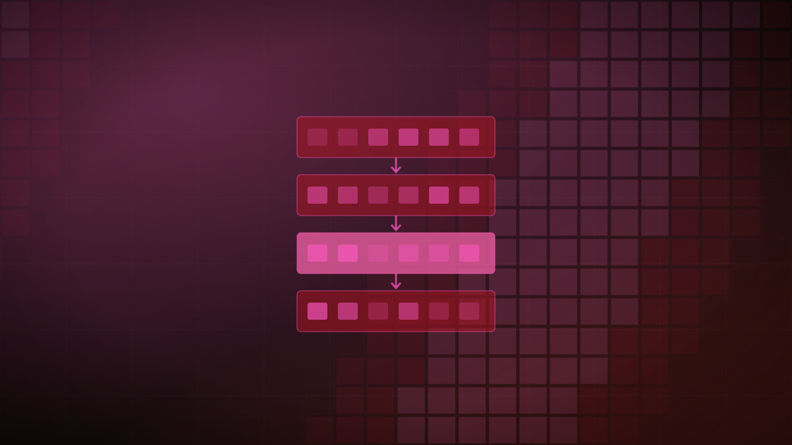

Anthropic releases Claude Fable 5.1 and Mythos 5.1, cutting cache prices by 75%
The release introduces cheaper prompt caching, refined safeguards for cybersecurity, and a zero-data-retention option to deploy models on customer-controlled cloud servers.

Original cover art, generated for this story. THE VISSION does not republish third-party press imagery.
- Anthropic launched Claude Fable 5.1 and Claude Mythos 5.1 on September 1, 2026, designed for advanced coding, knowledge work, and scientific research, according to The Verge and AWS.
- While standard pricing remains at $10 per million input and $50 per million output tokens, cache read prices are slashed 75% to $0.25 per million tokens, cutting costs for agentic tasks by up to 45%.
- A new partnership with AWS introduces Enterprise Frontier Safeguards (EFS), offering eligible customers zero data retention by keeping data within their controlled cloud infrastructure.
- Fable 5.1 is generally available, while Mythos 5.1 is restricted to vetted researchers, featuring relaxed safeguards that block 60% fewer cybersecurity requests and 85% fewer biology requests.
Anthropic released Claude Fable 5.1 and Claude Mythos 5.1 on September 1, representing the latest generation of its Claude model family, according to reporting from The Verge and an official announcement on the Amazon Web Services (AWS) blog. The update focuses on reducing developer costs, refining overzealous safeguards, and giving enterprise customers absolute control over data privacy.
While standard pricing is unchanged at $10 per million input tokens and $50 per million output tokens, Anthropic has cut the price of prompt cache reads by 75% to $0.25 per million tokens. For continuous workloads like software engineering agents that repeatedly scan large codebases, this price cut reduces typical operating costs by roughly 25% and highly agentic workloads by up to 45%. Early testers, including Box CEO Aaron Levie and Every CEO Dan Shipper, described Fable 5.1 as a superior coding model that is significantly more token-efficient and better at catching complex code nuances than previous versions.
The update also introduces a major structural change in how enterprise data is handled on public clouds. Under a new system called Enterprise Frontier Safeguards (EFS), launched in partnership with AWS, eligible enterprise customers can deploy the models with a Zero Data Retention (ZDR) policy. Rather than routing data through Anthropic's systems, EFS keeps inference requests and data entirely within the customer's own controlled cloud environment on AWS.
The two releases utilize the same underlying model architecture but carry different safety configurations. Fable 5.1 is the generally available model and includes standard safeguards, which have been refined to reduce false-positive blocks by 60% in cybersecurity and 85% in biology compared to previous versions. It is also now permitted to scan source code for software vulnerabilities. Mythos 5.1 is restricted to vetted cyberdefenders and life scientists under Anthropic's Trusted Access Programs, offering relaxed safeguards for high-stakes research.
A 75% cut to cache read pricing directly addresses the economic bottleneck of building autonomous agents, which must repeatedly digest massive system prompts and codebases. By shifting the pricing focus from raw generation to context reuse, and partnering with cloud providers to allow zero data retention on a customer's own servers, Anthropic is trying to make frontier-tier agentic systems both financially and regulatory viable for risk-averse enterprise developers.